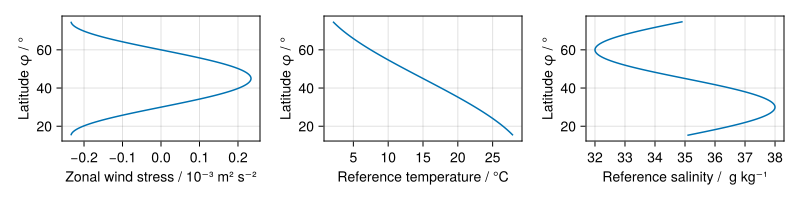

GyreInABox
Documentation for GyreInABox.
Model details
The model is an adaptation of the baroclinic gyre example from the MITgcm documentation. It simulates a wind and buoyancy forced double-gyre ocean circulation on a spherical shell sector spatial domain, with default domain extents $(0^\circ, 60^\circ) \times (15^\circ, 75^\circ) \times (-1800\textsf{m}, 0\textsf{m})$ (longitude × latitude × depth dimensions).
By default a non-linear TEOS-10 polynomial equation of state is used to compute buoyancy from salinity and temperature fields. No slip / no-flux boundary conditions are applied to the velocity fields on all walls, and a boundary condition corresponding to a damping zonal drag on the bottom surface. The zonal velocity component is subject to a latitude dependent wind stress roughly reflecting average zonal wind patterns at the surface. The temperature and salinity fields have no-flux boundary conditions applied on all walls and the bottom surface, and relaxation boundary conditions on the top surface which restore the surface fields towards a latitude dependent reference temperature / salinity with a parameterized relaxation time. The surface wind stress, reference temperature and reference salinity as a function of latitude are shown in the figure below.

The model is initialised from rest (zero velocity). The temperature and salinity fields are initialised to match the reference temperature and salinity at the surface and following smoothly varying thermocline / halocline like profiles with depth, and constant in longitude, as shown in the figure below.

Usage example
The below example illustrates setting up and running a simulation of the model with the default parameter values and configuration modulo changing the model to record only a horizontal (surface) slice and depth slice along longitude axis as outputs. The resulting horizontal and depth slices of simulated fields are recorded as an animation using CairoMakie. A coarse default grid size (60 × 60 × 15) and small simulation time (60 days) are set so as to allow a simulation to run in around 5 minutes on a CPU, but if running on a GPU (controlled by architecture keyword argument to GyreInABoxConfiguration) then finer spatial discretizations and longer simulation times can easily be used.
using Oceananigans.Units
using GyreInABox
parameters = GyreInABoxParameters()
output_types = (LongitudeDepthSlice(), HorizontalSlice())
configuration = GyreInABoxConfiguration(output_types=output_types)
run_simulation(parameters, configuration)
for output_type in output_types
record_animation(configuration, output_type)
end[ Info: Initializing simulation...
Iteration: 0000, time: 0 seconds, Δt: 15 minutes, wall time: 0 seconds
max(|u|) = 0.00e+00 m s⁻¹, max(|v|) = 0.00e+00 m s⁻¹, max(|w|) = 0.00e+00 m s⁻¹, max(|T|) = 2.73e+01 °C, max(|S|) = 3.79e+01 g kg⁻¹, max(|e|) = 0.00e+00 m² s⁻²
[ Info: ... simulation initialization complete (47.332 seconds)
[ Info: Executing initial time step...
[ Info: ... initial time step complete (28.706 seconds).
Iteration: 0040, time: 16.250 hours, Δt: 30 minutes, wall time: 1.343 minutes
max(|u|) = 7.08e-01 m s⁻¹, max(|v|) = 4.47e-01 m s⁻¹, max(|w|) = 2.65e-03 m s⁻¹, max(|T|) = 2.74e+01 °C, max(|S|) = 3.79e+01 g kg⁻¹, max(|e|) = 4.73e-04 m² s⁻²
Iteration: 0080, time: 1.500 days, Δt: 30 minutes, wall time: 1.391 minutes
max(|u|) = 2.57e-01 m s⁻¹, max(|v|) = 5.94e-01 m s⁻¹, max(|w|) = 1.42e-03 m s⁻¹, max(|T|) = 2.74e+01 °C, max(|S|) = 3.79e+01 g kg⁻¹, max(|e|) = 4.65e-04 m² s⁻²
Iteration: 0120, time: 2.333 days, Δt: 30 minutes, wall time: 1.439 minutes
max(|u|) = 7.38e-01 m s⁻¹, max(|v|) = 6.70e-01 m s⁻¹, max(|w|) = 2.65e-03 m s⁻¹, max(|T|) = 2.74e+01 °C, max(|S|) = 3.79e+01 g kg⁻¹, max(|e|) = 4.35e-04 m² s⁻²
Iteration: 0160, time: 3.167 days, Δt: 30 minutes, wall time: 1.487 minutes
max(|u|) = 4.89e-01 m s⁻¹, max(|v|) = 8.55e-01 m s⁻¹, max(|w|) = 4.12e-03 m s⁻¹, max(|T|) = 2.74e+01 °C, max(|S|) = 3.79e+01 g kg⁻¹, max(|e|) = 4.51e-04 m² s⁻²
Iteration: 0200, time: 4 days, Δt: 30 minutes, wall time: 1.535 minutes
max(|u|) = 6.70e-01 m s⁻¹, max(|v|) = 1.08e+00 m s⁻¹, max(|w|) = 3.87e-03 m s⁻¹, max(|T|) = 2.74e+01 °C, max(|S|) = 3.79e+01 g kg⁻¹, max(|e|) = 4.57e-04 m² s⁻²
Iteration: 0240, time: 4.833 days, Δt: 30 minutes, wall time: 1.583 minutes
max(|u|) = 6.99e-01 m s⁻¹, max(|v|) = 1.32e+00 m s⁻¹, max(|w|) = 5.82e-03 m s⁻¹, max(|T|) = 2.74e+01 °C, max(|S|) = 3.79e+01 g kg⁻¹, max(|e|) = 8.74e-04 m² s⁻²
Iteration: 0280, time: 5.667 days, Δt: 30 minutes, wall time: 1.631 minutes
max(|u|) = 5.82e-01 m s⁻¹, max(|v|) = 1.42e+00 m s⁻¹, max(|w|) = 6.91e-03 m s⁻¹, max(|T|) = 2.74e+01 °C, max(|S|) = 3.79e+01 g kg⁻¹, max(|e|) = 7.27e-03 m² s⁻²
Iteration: 0320, time: 6.500 days, Δt: 30 minutes, wall time: 1.679 minutes
max(|u|) = 8.38e-01 m s⁻¹, max(|v|) = 1.60e+00 m s⁻¹, max(|w|) = 5.36e-03 m s⁻¹, max(|T|) = 2.75e+01 °C, max(|S|) = 3.80e+01 g kg⁻¹, max(|e|) = 7.16e-03 m² s⁻²
Iteration: 0360, time: 7.333 days, Δt: 30 minutes, wall time: 1.728 minutes
max(|u|) = 7.18e-01 m s⁻¹, max(|v|) = 1.63e+00 m s⁻¹, max(|w|) = 4.84e-03 m s⁻¹, max(|T|) = 2.75e+01 °C, max(|S|) = 3.80e+01 g kg⁻¹, max(|e|) = 3.51e-03 m² s⁻²
Iteration: 0400, time: 8.167 days, Δt: 30 minutes, wall time: 1.776 minutes
max(|u|) = 8.67e-01 m s⁻¹, max(|v|) = 1.62e+00 m s⁻¹, max(|w|) = 2.81e-03 m s⁻¹, max(|T|) = 2.75e+01 °C, max(|S|) = 3.80e+01 g kg⁻¹, max(|e|) = 2.42e-03 m² s⁻²
Iteration: 0440, time: 9 days, Δt: 30 minutes, wall time: 1.824 minutes
max(|u|) = 8.68e-01 m s⁻¹, max(|v|) = 1.56e+00 m s⁻¹, max(|w|) = 2.68e-03 m s⁻¹, max(|T|) = 2.75e+01 °C, max(|S|) = 3.80e+01 g kg⁻¹, max(|e|) = 2.38e-03 m² s⁻²
Iteration: 0480, time: 9.833 days, Δt: 30 minutes, wall time: 1.872 minutes
max(|u|) = 8.35e-01 m s⁻¹, max(|v|) = 1.65e+00 m s⁻¹, max(|w|) = 3.39e-03 m s⁻¹, max(|T|) = 2.75e+01 °C, max(|S|) = 3.80e+01 g kg⁻¹, max(|e|) = 4.74e-03 m² s⁻²
Iteration: 0520, time: 10.667 days, Δt: 30 minutes, wall time: 1.920 minutes
max(|u|) = 9.81e-01 m s⁻¹, max(|v|) = 1.81e+00 m s⁻¹, max(|w|) = 3.59e-03 m s⁻¹, max(|T|) = 2.75e+01 °C, max(|S|) = 3.80e+01 g kg⁻¹, max(|e|) = 5.10e-03 m² s⁻²
Iteration: 0560, time: 11.500 days, Δt: 30 minutes, wall time: 1.968 minutes
max(|u|) = 8.18e-01 m s⁻¹, max(|v|) = 1.88e+00 m s⁻¹, max(|w|) = 4.11e-03 m s⁻¹, max(|T|) = 2.75e+01 °C, max(|S|) = 3.80e+01 g kg⁻¹, max(|e|) = 6.00e-03 m² s⁻²
Iteration: 0600, time: 12.333 days, Δt: 30 minutes, wall time: 2.017 minutes
max(|u|) = 1.04e+00 m s⁻¹, max(|v|) = 1.96e+00 m s⁻¹, max(|w|) = 4.18e-03 m s⁻¹, max(|T|) = 2.75e+01 °C, max(|S|) = 3.80e+01 g kg⁻¹, max(|e|) = 5.94e-03 m² s⁻²
Iteration: 0640, time: 13.167 days, Δt: 30 minutes, wall time: 2.065 minutes
max(|u|) = 8.96e-01 m s⁻¹, max(|v|) = 2.07e+00 m s⁻¹, max(|w|) = 4.19e-03 m s⁻¹, max(|T|) = 2.75e+01 °C, max(|S|) = 3.80e+01 g kg⁻¹, max(|e|) = 6.41e-03 m² s⁻²
Iteration: 0680, time: 14 days, Δt: 30 minutes, wall time: 2.114 minutes
max(|u|) = 1.04e+00 m s⁻¹, max(|v|) = 2.13e+00 m s⁻¹, max(|w|) = 3.68e-03 m s⁻¹, max(|T|) = 2.75e+01 °C, max(|S|) = 3.80e+01 g kg⁻¹, max(|e|) = 6.09e-03 m² s⁻²
Iteration: 0720, time: 14.833 days, Δt: 30 minutes, wall time: 2.162 minutes
max(|u|) = 1.01e+00 m s⁻¹, max(|v|) = 2.21e+00 m s⁻¹, max(|w|) = 3.88e-03 m s⁻¹, max(|T|) = 2.75e+01 °C, max(|S|) = 3.81e+01 g kg⁻¹, max(|e|) = 6.25e-03 m² s⁻²
Iteration: 0760, time: 15.667 days, Δt: 30 minutes, wall time: 2.210 minutes
max(|u|) = 1.07e+00 m s⁻¹, max(|v|) = 2.28e+00 m s⁻¹, max(|w|) = 3.88e-03 m s⁻¹, max(|T|) = 2.75e+01 °C, max(|S|) = 3.81e+01 g kg⁻¹, max(|e|) = 5.09e-03 m² s⁻²
Iteration: 0800, time: 16.500 days, Δt: 30 minutes, wall time: 2.258 minutes
max(|u|) = 1.05e+00 m s⁻¹, max(|v|) = 2.30e+00 m s⁻¹, max(|w|) = 3.34e-03 m s⁻¹, max(|T|) = 2.82e+01 °C, max(|S|) = 3.81e+01 g kg⁻¹, max(|e|) = 5.44e-03 m² s⁻²
Iteration: 0840, time: 17.333 days, Δt: 30 minutes, wall time: 2.306 minutes
max(|u|) = 1.15e+00 m s⁻¹, max(|v|) = 2.36e+00 m s⁻¹, max(|w|) = 4.00e-03 m s⁻¹, max(|T|) = 2.90e+01 °C, max(|S|) = 3.82e+01 g kg⁻¹, max(|e|) = 5.06e-03 m² s⁻²
Iteration: 0880, time: 18.167 days, Δt: 30 minutes, wall time: 2.354 minutes
max(|u|) = 1.06e+00 m s⁻¹, max(|v|) = 2.17e+00 m s⁻¹, max(|w|) = 4.09e-03 m s⁻¹, max(|T|) = 2.91e+01 °C, max(|S|) = 3.82e+01 g kg⁻¹, max(|e|) = 5.44e-03 m² s⁻²
Iteration: 0920, time: 19 days, Δt: 30 minutes, wall time: 2.402 minutes
max(|u|) = 1.20e+00 m s⁻¹, max(|v|) = 2.17e+00 m s⁻¹, max(|w|) = 3.73e-03 m s⁻¹, max(|T|) = 2.90e+01 °C, max(|S|) = 3.82e+01 g kg⁻¹, max(|e|) = 4.81e-03 m² s⁻²
Iteration: 0960, time: 19.833 days, Δt: 30 minutes, wall time: 2.451 minutes
max(|u|) = 1.10e+00 m s⁻¹, max(|v|) = 2.30e+00 m s⁻¹, max(|w|) = 2.87e-03 m s⁻¹, max(|T|) = 3.07e+01 °C, max(|S|) = 3.83e+01 g kg⁻¹, max(|e|) = 7.09e-03 m² s⁻²
Iteration: 1000, time: 20.667 days, Δt: 30 minutes, wall time: 2.499 minutes
max(|u|) = 1.20e+00 m s⁻¹, max(|v|) = 2.28e+00 m s⁻¹, max(|w|) = 3.43e-03 m s⁻¹, max(|T|) = 2.98e+01 °C, max(|S|) = 3.83e+01 g kg⁻¹, max(|e|) = 6.93e-03 m² s⁻²
Iteration: 1040, time: 21.500 days, Δt: 30 minutes, wall time: 2.547 minutes
max(|u|) = 1.17e+00 m s⁻¹, max(|v|) = 2.24e+00 m s⁻¹, max(|w|) = 2.99e-03 m s⁻¹, max(|T|) = 3.12e+01 °C, max(|S|) = 3.84e+01 g kg⁻¹, max(|e|) = 6.99e-03 m² s⁻²
Iteration: 1080, time: 22.333 days, Δt: 30 minutes, wall time: 2.595 minutes
max(|u|) = 1.18e+00 m s⁻¹, max(|v|) = 2.27e+00 m s⁻¹, max(|w|) = 2.64e-03 m s⁻¹, max(|T|) = 3.09e+01 °C, max(|S|) = 3.85e+01 g kg⁻¹, max(|e|) = 6.57e-03 m² s⁻²
Iteration: 1120, time: 23.167 days, Δt: 30 minutes, wall time: 2.643 minutes
max(|u|) = 1.21e+00 m s⁻¹, max(|v|) = 2.21e+00 m s⁻¹, max(|w|) = 2.82e-03 m s⁻¹, max(|T|) = 3.21e+01 °C, max(|S|) = 3.87e+01 g kg⁻¹, max(|e|) = 9.30e-03 m² s⁻²
Iteration: 1160, time: 24 days, Δt: 30 minutes, wall time: 2.692 minutes
max(|u|) = 1.36e+00 m s⁻¹, max(|v|) = 2.32e+00 m s⁻¹, max(|w|) = 3.35e-03 m s⁻¹, max(|T|) = 3.11e+01 °C, max(|S|) = 3.86e+01 g kg⁻¹, max(|e|) = 8.46e-03 m² s⁻²
Iteration: 1200, time: 24.833 days, Δt: 30 minutes, wall time: 2.740 minutes
max(|u|) = 1.57e+00 m s⁻¹, max(|v|) = 2.25e+00 m s⁻¹, max(|w|) = 3.71e-03 m s⁻¹, max(|T|) = 3.31e+01 °C, max(|S|) = 3.89e+01 g kg⁻¹, max(|e|) = 6.99e-03 m² s⁻²
Iteration: 1240, time: 25.667 days, Δt: 30 minutes, wall time: 2.788 minutes
max(|u|) = 1.63e+00 m s⁻¹, max(|v|) = 2.38e+00 m s⁻¹, max(|w|) = 4.19e-03 m s⁻¹, max(|T|) = 3.17e+01 °C, max(|S|) = 3.89e+01 g kg⁻¹, max(|e|) = 6.75e-03 m² s⁻²
Iteration: 1280, time: 26.500 days, Δt: 30 minutes, wall time: 2.836 minutes
max(|u|) = 1.78e+00 m s⁻¹, max(|v|) = 2.43e+00 m s⁻¹, max(|w|) = 4.42e-03 m s⁻¹, max(|T|) = 3.36e+01 °C, max(|S|) = 3.88e+01 g kg⁻¹, max(|e|) = 6.51e-03 m² s⁻²
Iteration: 1320, time: 27.333 days, Δt: 30 minutes, wall time: 2.884 minutes
max(|u|) = 1.96e+00 m s⁻¹, max(|v|) = 2.36e+00 m s⁻¹, max(|w|) = 4.74e-03 m s⁻¹, max(|T|) = 3.44e+01 °C, max(|S|) = 3.89e+01 g kg⁻¹, max(|e|) = 9.42e-03 m² s⁻²
Iteration: 1360, time: 28.167 days, Δt: 30 minutes, wall time: 2.932 minutes
max(|u|) = 2.10e+00 m s⁻¹, max(|v|) = 2.41e+00 m s⁻¹, max(|w|) = 5.62e-03 m s⁻¹, max(|T|) = 3.29e+01 °C, max(|S|) = 3.88e+01 g kg⁻¹, max(|e|) = 9.67e-03 m² s⁻²
Iteration: 1400, time: 29 days, Δt: 30 minutes, wall time: 2.980 minutes
max(|u|) = 1.83e+00 m s⁻¹, max(|v|) = 2.49e+00 m s⁻¹, max(|w|) = 6.55e-03 m s⁻¹, max(|T|) = 3.55e+01 °C, max(|S|) = 3.90e+01 g kg⁻¹, max(|e|) = 9.11e-03 m² s⁻²
Iteration: 1440, time: 29.833 days, Δt: 30 minutes, wall time: 3.029 minutes
max(|u|) = 1.93e+00 m s⁻¹, max(|v|) = 2.55e+00 m s⁻¹, max(|w|) = 6.45e-03 m s⁻¹, max(|T|) = 3.72e+01 °C, max(|S|) = 3.92e+01 g kg⁻¹, max(|e|) = 8.24e-03 m² s⁻²
Iteration: 1480, time: 30.667 days, Δt: 30 minutes, wall time: 3.077 minutes
max(|u|) = 1.74e+00 m s⁻¹, max(|v|) = 2.66e+00 m s⁻¹, max(|w|) = 6.12e-03 m s⁻¹, max(|T|) = 3.73e+01 °C, max(|S|) = 3.95e+01 g kg⁻¹, max(|e|) = 7.89e-03 m² s⁻²
Iteration: 1520, time: 31.500 days, Δt: 30 minutes, wall time: 3.125 minutes
max(|u|) = 1.88e+00 m s⁻¹, max(|v|) = 2.76e+00 m s⁻¹, max(|w|) = 6.01e-03 m s⁻¹, max(|T|) = 3.63e+01 °C, max(|S|) = 3.98e+01 g kg⁻¹, max(|e|) = 5.26e-03 m² s⁻²
Iteration: 1560, time: 32.333 days, Δt: 30 minutes, wall time: 3.173 minutes
max(|u|) = 2.19e+00 m s⁻¹, max(|v|) = 2.90e+00 m s⁻¹, max(|w|) = 5.11e-03 m s⁻¹, max(|T|) = 3.58e+01 °C, max(|S|) = 3.96e+01 g kg⁻¹, max(|e|) = 5.48e-03 m² s⁻²
Iteration: 1600, time: 33.167 days, Δt: 30 minutes, wall time: 3.222 minutes
max(|u|) = 2.48e+00 m s⁻¹, max(|v|) = 2.98e+00 m s⁻¹, max(|w|) = 4.76e-03 m s⁻¹, max(|T|) = 3.88e+01 °C, max(|S|) = 3.96e+01 g kg⁻¹, max(|e|) = 5.17e-03 m² s⁻²
Iteration: 1640, time: 34 days, Δt: 30 minutes, wall time: 3.270 minutes
max(|u|) = 2.60e+00 m s⁻¹, max(|v|) = 3.00e+00 m s⁻¹, max(|w|) = 3.26e-03 m s⁻¹, max(|T|) = 4.07e+01 °C, max(|S|) = 4.01e+01 g kg⁻¹, max(|e|) = 5.66e-03 m² s⁻²
Iteration: 1680, time: 34.833 days, Δt: 30 minutes, wall time: 3.319 minutes
max(|u|) = 2.63e+00 m s⁻¹, max(|v|) = 2.95e+00 m s⁻¹, max(|w|) = 3.02e-03 m s⁻¹, max(|T|) = 4.18e+01 °C, max(|S|) = 4.10e+01 g kg⁻¹, max(|e|) = 5.02e-03 m² s⁻²
Iteration: 1720, time: 35.667 days, Δt: 30 minutes, wall time: 3.367 minutes
max(|u|) = 2.75e+00 m s⁻¹, max(|v|) = 2.85e+00 m s⁻¹, max(|w|) = 3.31e-03 m s⁻¹, max(|T|) = 4.19e+01 °C, max(|S|) = 4.18e+01 g kg⁻¹, max(|e|) = 5.50e-03 m² s⁻²
Iteration: 1760, time: 36.500 days, Δt: 30 minutes, wall time: 3.415 minutes
max(|u|) = 2.50e+00 m s⁻¹, max(|v|) = 2.71e+00 m s⁻¹, max(|w|) = 3.46e-03 m s⁻¹, max(|T|) = 4.07e+01 °C, max(|S|) = 4.21e+01 g kg⁻¹, max(|e|) = 6.14e-03 m² s⁻²
Iteration: 1800, time: 37.333 days, Δt: 30 minutes, wall time: 3.464 minutes
max(|u|) = 2.49e+00 m s⁻¹, max(|v|) = 2.58e+00 m s⁻¹, max(|w|) = 3.76e-03 m s⁻¹, max(|T|) = 3.83e+01 °C, max(|S|) = 4.20e+01 g kg⁻¹, max(|e|) = 7.94e-03 m² s⁻²
Iteration: 1840, time: 38.167 days, Δt: 30 minutes, wall time: 3.512 minutes
max(|u|) = 2.61e+00 m s⁻¹, max(|v|) = 2.44e+00 m s⁻¹, max(|w|) = 4.33e-03 m s⁻¹, max(|T|) = 3.69e+01 °C, max(|S|) = 4.11e+01 g kg⁻¹, max(|e|) = 8.09e-03 m² s⁻²
Iteration: 1880, time: 39 days, Δt: 30 minutes, wall time: 3.560 minutes
max(|u|) = 2.52e+00 m s⁻¹, max(|v|) = 2.49e+00 m s⁻¹, max(|w|) = 3.66e-03 m s⁻¹, max(|T|) = 3.74e+01 °C, max(|S|) = 4.09e+01 g kg⁻¹, max(|e|) = 8.55e-03 m² s⁻²
Iteration: 1920, time: 39.833 days, Δt: 30 minutes, wall time: 3.609 minutes
max(|u|) = 2.67e+00 m s⁻¹, max(|v|) = 2.49e+00 m s⁻¹, max(|w|) = 4.18e-03 m s⁻¹, max(|T|) = 3.74e+01 °C, max(|S|) = 4.09e+01 g kg⁻¹, max(|e|) = 8.33e-03 m² s⁻²
Iteration: 1960, time: 40.667 days, Δt: 30 minutes, wall time: 3.657 minutes
max(|u|) = 2.44e+00 m s⁻¹, max(|v|) = 2.43e+00 m s⁻¹, max(|w|) = 3.37e-03 m s⁻¹, max(|T|) = 3.62e+01 °C, max(|S|) = 3.99e+01 g kg⁻¹, max(|e|) = 8.21e-03 m² s⁻²
Iteration: 2000, time: 41.500 days, Δt: 30 minutes, wall time: 3.705 minutes
max(|u|) = 2.13e+00 m s⁻¹, max(|v|) = 2.32e+00 m s⁻¹, max(|w|) = 2.93e-03 m s⁻¹, max(|T|) = 3.62e+01 °C, max(|S|) = 4.03e+01 g kg⁻¹, max(|e|) = 6.30e-03 m² s⁻²
Iteration: 2040, time: 42.333 days, Δt: 30 minutes, wall time: 3.754 minutes
max(|u|) = 2.09e+00 m s⁻¹, max(|v|) = 2.21e+00 m s⁻¹, max(|w|) = 2.84e-03 m s⁻¹, max(|T|) = 3.75e+01 °C, max(|S|) = 4.07e+01 g kg⁻¹, max(|e|) = 6.49e-03 m² s⁻²
Iteration: 2080, time: 43.167 days, Δt: 30 minutes, wall time: 3.802 minutes
max(|u|) = 1.99e+00 m s⁻¹, max(|v|) = 2.16e+00 m s⁻¹, max(|w|) = 2.61e-03 m s⁻¹, max(|T|) = 3.61e+01 °C, max(|S|) = 4.03e+01 g kg⁻¹, max(|e|) = 4.94e-03 m² s⁻²
Iteration: 2120, time: 44 days, Δt: 30 minutes, wall time: 3.850 minutes
max(|u|) = 2.23e+00 m s⁻¹, max(|v|) = 2.10e+00 m s⁻¹, max(|w|) = 2.68e-03 m s⁻¹, max(|T|) = 3.60e+01 °C, max(|S|) = 3.98e+01 g kg⁻¹, max(|e|) = 6.32e-03 m² s⁻²
Iteration: 2160, time: 44.833 days, Δt: 30 minutes, wall time: 3.899 minutes
max(|u|) = 2.01e+00 m s⁻¹, max(|v|) = 2.16e+00 m s⁻¹, max(|w|) = 3.03e-03 m s⁻¹, max(|T|) = 3.53e+01 °C, max(|S|) = 3.96e+01 g kg⁻¹, max(|e|) = 6.51e-03 m² s⁻²
Iteration: 2200, time: 45.667 days, Δt: 30 minutes, wall time: 3.947 minutes
max(|u|) = 2.03e+00 m s⁻¹, max(|v|) = 2.17e+00 m s⁻¹, max(|w|) = 2.82e-03 m s⁻¹, max(|T|) = 3.42e+01 °C, max(|S|) = 3.96e+01 g kg⁻¹, max(|e|) = 6.09e-03 m² s⁻²
Iteration: 2240, time: 46.500 days, Δt: 30 minutes, wall time: 3.995 minutes
max(|u|) = 1.98e+00 m s⁻¹, max(|v|) = 2.20e+00 m s⁻¹, max(|w|) = 3.18e-03 m s⁻¹, max(|T|) = 3.33e+01 °C, max(|S|) = 3.99e+01 g kg⁻¹, max(|e|) = 6.92e-03 m² s⁻²
Iteration: 2280, time: 47.333 days, Δt: 30 minutes, wall time: 4.044 minutes
max(|u|) = 2.05e+00 m s⁻¹, max(|v|) = 2.20e+00 m s⁻¹, max(|w|) = 3.18e-03 m s⁻¹, max(|T|) = 3.29e+01 °C, max(|S|) = 4.03e+01 g kg⁻¹, max(|e|) = 7.48e-03 m² s⁻²
Iteration: 2320, time: 48.167 days, Δt: 30 minutes, wall time: 4.092 minutes
max(|u|) = 1.86e+00 m s⁻¹, max(|v|) = 2.20e+00 m s⁻¹, max(|w|) = 3.87e-03 m s⁻¹, max(|T|) = 3.22e+01 °C, max(|S|) = 4.04e+01 g kg⁻¹, max(|e|) = 8.24e-03 m² s⁻²
Iteration: 2360, time: 49 days, Δt: 30 minutes, wall time: 4.141 minutes
max(|u|) = 1.79e+00 m s⁻¹, max(|v|) = 2.19e+00 m s⁻¹, max(|w|) = 4.07e-03 m s⁻¹, max(|T|) = 3.20e+01 °C, max(|S|) = 4.02e+01 g kg⁻¹, max(|e|) = 6.49e-03 m² s⁻²
Iteration: 2400, time: 49.833 days, Δt: 30 minutes, wall time: 4.189 minutes
max(|u|) = 1.61e+00 m s⁻¹, max(|v|) = 2.20e+00 m s⁻¹, max(|w|) = 3.64e-03 m s⁻¹, max(|T|) = 3.17e+01 °C, max(|S|) = 3.99e+01 g kg⁻¹, max(|e|) = 4.25e-03 m² s⁻²
Iteration: 2440, time: 50.667 days, Δt: 30 minutes, wall time: 4.238 minutes
max(|u|) = 1.63e+00 m s⁻¹, max(|v|) = 2.17e+00 m s⁻¹, max(|w|) = 3.17e-03 m s⁻¹, max(|T|) = 3.13e+01 °C, max(|S|) = 3.99e+01 g kg⁻¹, max(|e|) = 3.12e-03 m² s⁻²
Iteration: 2480, time: 51.500 days, Δt: 30 minutes, wall time: 4.286 minutes
max(|u|) = 1.60e+00 m s⁻¹, max(|v|) = 2.14e+00 m s⁻¹, max(|w|) = 2.70e-03 m s⁻¹, max(|T|) = 3.15e+01 °C, max(|S|) = 4.03e+01 g kg⁻¹, max(|e|) = 3.66e-03 m² s⁻²
Iteration: 2520, time: 52.333 days, Δt: 30 minutes, wall time: 4.335 minutes
max(|u|) = 1.58e+00 m s⁻¹, max(|v|) = 2.14e+00 m s⁻¹, max(|w|) = 3.11e-03 m s⁻¹, max(|T|) = 3.19e+01 °C, max(|S|) = 4.13e+01 g kg⁻¹, max(|e|) = 5.48e-03 m² s⁻²
Iteration: 2560, time: 53.167 days, Δt: 30 minutes, wall time: 4.383 minutes
max(|u|) = 1.56e+00 m s⁻¹, max(|v|) = 2.16e+00 m s⁻¹, max(|w|) = 3.28e-03 m s⁻¹, max(|T|) = 3.20e+01 °C, max(|S|) = 4.16e+01 g kg⁻¹, max(|e|) = 3.37e-03 m² s⁻²
Iteration: 2600, time: 54 days, Δt: 30 minutes, wall time: 4.431 minutes
max(|u|) = 1.58e+00 m s⁻¹, max(|v|) = 2.13e+00 m s⁻¹, max(|w|) = 2.68e-03 m s⁻¹, max(|T|) = 3.21e+01 °C, max(|S|) = 3.99e+01 g kg⁻¹, max(|e|) = 7.94e-03 m² s⁻²
Iteration: 2640, time: 54.833 days, Δt: 30 minutes, wall time: 4.480 minutes
max(|u|) = 1.59e+00 m s⁻¹, max(|v|) = 2.13e+00 m s⁻¹, max(|w|) = 2.13e-03 m s⁻¹, max(|T|) = 3.18e+01 °C, max(|S|) = 4.02e+01 g kg⁻¹, max(|e|) = 3.11e-03 m² s⁻²
Iteration: 2680, time: 55.667 days, Δt: 30 minutes, wall time: 4.529 minutes
max(|u|) = 1.67e+00 m s⁻¹, max(|v|) = 2.16e+00 m s⁻¹, max(|w|) = 2.31e-03 m s⁻¹, max(|T|) = 3.12e+01 °C, max(|S|) = 4.02e+01 g kg⁻¹, max(|e|) = 2.92e-03 m² s⁻²
Iteration: 2720, time: 56.500 days, Δt: 30 minutes, wall time: 4.577 minutes
max(|u|) = 1.73e+00 m s⁻¹, max(|v|) = 2.25e+00 m s⁻¹, max(|w|) = 2.67e-03 m s⁻¹, max(|T|) = 3.06e+01 °C, max(|S|) = 4.01e+01 g kg⁻¹, max(|e|) = 2.64e-03 m² s⁻²
Iteration: 2760, time: 57.333 days, Δt: 30 minutes, wall time: 4.626 minutes
max(|u|) = 1.77e+00 m s⁻¹, max(|v|) = 2.11e+00 m s⁻¹, max(|w|) = 2.56e-03 m s⁻¹, max(|T|) = 3.09e+01 °C, max(|S|) = 4.01e+01 g kg⁻¹, max(|e|) = 3.59e-03 m² s⁻²
Iteration: 2800, time: 58.167 days, Δt: 30 minutes, wall time: 4.674 minutes
max(|u|) = 1.80e+00 m s⁻¹, max(|v|) = 2.10e+00 m s⁻¹, max(|w|) = 2.46e-03 m s⁻¹, max(|T|) = 3.00e+01 °C, max(|S|) = 3.99e+01 g kg⁻¹, max(|e|) = 3.66e-03 m² s⁻²
Iteration: 2840, time: 59 days, Δt: 30 minutes, wall time: 4.722 minutes
max(|u|) = 1.81e+00 m s⁻¹, max(|v|) = 2.11e+00 m s⁻¹, max(|w|) = 2.24e-03 m s⁻¹, max(|T|) = 2.93e+01 °C, max(|S|) = 3.97e+01 g kg⁻¹, max(|e|) = 3.10e-03 m² s⁻²
Iteration: 2880, time: 59.833 days, Δt: 30 minutes, wall time: 4.771 minutes
max(|u|) = 1.86e+00 m s⁻¹, max(|v|) = 2.10e+00 m s⁻¹, max(|w|) = 2.28e-03 m s⁻¹, max(|T|) = 2.99e+01 °C, max(|S|) = 3.98e+01 g kg⁻¹, max(|e|) = 4.24e-03 m² s⁻²
[ Info: Simulation is stopping after running for 4.781 minutes.
[ Info: Simulation time 60 days equals or exceeds stop time 60 days.
[ Info: Recording an animation of longitude_depth_slice_at_latitude_45.0deg to gyre_model_longitude_depth_slice_at_latitude_45.0deg.mp4...
Plotting frame 10 of 61
Plotting frame 20 of 61
Plotting frame 30 of 61
Plotting frame 40 of 61
Plotting frame 50 of 61
Plotting frame 60 of 61
[ Info: Recording an animation of horizontal_slice_at_depth_0.0m to gyre_model_horizontal_slice_at_depth_0.0m.mp4...
Plotting frame 10 of 61
Plotting frame 20 of 61
Plotting frame 30 of 61
Plotting frame 40 of 61
Plotting frame 50 of 61
Plotting frame 60 of 61
API reference
GyreInABox.GyreInABoxGyreInABox.BarotropicStreamFunctionGyreInABox.DepthAveragedGyreInABox.FreeSurfaceFieldsGyreInABox.GyreInABoxConfigurationGyreInABox.GyreInABoxParametersGyreInABox.HorizontalSliceGyreInABox.LatitudeDepthSliceGyreInABox.LongitudeDepthSliceGyreInABox.MOCStreamFunctionGyreInABox.add_output_writers!GyreInABox.add_progress_message_callback!GyreInABox.axis_aspect_ratioGyreInABox.axis_limitsGyreInABox.axis_xlabelGyreInABox.axis_ylabelGyreInABox.bottom_meridional_dragGyreInABox.bottom_zonal_dragGyreInABox.boundary_conditionsGyreInABox.hyperbolically_spaced_facesGyreInABox.indicesGyreInABox.initial_salinityGyreInABox.initial_temperatureGyreInABox.initialize_model!GyreInABox.labelGyreInABox.max_surface_wind_stressGyreInABox.output_filenameGyreInABox.outputsGyreInABox.record_animationGyreInABox.reference_surface_salinityGyreInABox.reference_surface_temperatureGyreInABox.run_simulationGyreInABox.scheduleGyreInABox.setup_gridGyreInABox.setup_modelGyreInABox.setup_simulationGyreInABox.sigmoidal_depth_profileGyreInABox.surface_salinity_fluxGyreInABox.surface_temperature_fluxGyreInABox.unitGyreInABox.variable_limitsGyreInABox.zonal_wind_stress
GyreInABox.GyreInABox — Module
Oceananigans based model of an ocean gyre in a bounded domain.
Details
Model of wind and buoyancy forced ocean gyre adapted from MITgcm documentation baroclinic ocean gyre example implemented using Oceananigans (Ramadhan et al. 2020).
Compared to MITgcm example, beyond the change in the underlying software framework, some key differences in the (default) model configuration are
- The model uses a seawater buoyancy formulation with tracer fields corresponding to salinity and (potential) temperature used to determine the buoyancy using a non-linear (polynomial) equation of state (Roquet et al. 2015).
- A weighted essentially non-oscillatory numerical scheme is used for momentum advection (Silvestri et al. 2024).
- The turbulence closure / parameterization used for small-scale turbulent mixing is a convective adjustment turbulent kinetic energy (CATKE) scheme (Wagner et al. 2025).
- Adaptive time stepping is used based on controlling advective CFL number.
BarotropicStreamFunctionDepthAveragedFreeSurfaceFieldsGyreInABoxConfigurationGyreInABoxParametersHorizontalSliceLatitudeDepthSliceLongitudeDepthSliceMOCStreamFunctioninitialize_model!record_animationrun_simulationsetup_modelsetup_simulation
References
- MITgcm contributors (2025). MITgcm/MITgcm: checkpoint69e (Version checkpoint69e). Zenodo. https://doi.org/10.5281/zenodo.15320163
- Ramadhan, A., Wagner, G., Hill, C., Campin, J. M., Churavy, V., Besard, T., Souza, A., Edelman, A., Ferrari, R. & Marshall, J. (2020). Oceananigans. jl: Fast and friendly geophysical fluid dynamics on GPUs. Journal of Open Source Software, 5(53).
- Roquet, F.; Madec, G.; Brodeau, L. and Nycander, J. (2015). Defining a simplified yet “realistic” equation of state for seawater. Journal of Physical Oceanography 45, 2564-2579.
- Silvestri, S., Wagner, G. L., Campin, J. M., Constantinou, N. C., Hill, C. N., Souza, A., & Ferrari, R. (2024). A new WENO-based momentum advection scheme for simulations of ocean mesoscale turbulence. Journal of Advances in Modeling Earth Systems, 16(7), e2023MS004130.
- Wagner, G. L., Hillier, A., Constantinou, N. C., Silvestri, S., Souza, A., Burns, K. J., Hill, C., Campin, J-M., Marshall, J. & Ferrari, R. (2025). Formulation and calibration of CATKE, a one-equation parameterization for microscale ocean mixing. Journal of Advances in Modeling Earth Systems, 17(4), e2024MS004522.
GyreInABox.BarotropicStreamFunction — Type
struct BarotropicStreamFunction{S} <: GyreInABox.AbstractHorizontalOutput{S}Barotropic stream function output.
Details
Records longitude-latitude fields corresponding to stream function of barotropic velocity - computed here as zonally accumulated - that is cumulative integral with respect to longitude - of depth integrated meridional velocity component:
\[\Psi^B(\lambda, \varphi, t) = \int_{\lambda_W}^{\lambda} \int_{z_B}^{z_S} v(\lambda', \varphi, z, t) \,\mathrm{d}z \,\mathrm{d}\lambda'\]
The outputted field is scaled to be in sverdrup (10⁶ m³ s⁻¹) units.
schedule::Any
GyreInABox.DepthAveraged — Type
struct DepthAveraged{S} <: GyreInABox.AbstractHorizontalOutput{S}Depth and time averaged output.
Details
Records horizontal fields corresponding to depth averaged model velocity and tracer fields.
schedule::Any: Schedule to record output at
GyreInABox.FreeSurfaceFields — Type
struct FreeSurfaceFields{S} <: GyreInABox.AbstractHorizontalOutput{S}Free surface fields output.
Details
Records two-dimensional free surface (height and barotropic velocity) fields.
schedule::Any: Time interval to record output at / s
GyreInABox.GyreInABoxConfiguration — Type
struct GyreInABoxConfiguration{T, A<:Oceananigans.Architectures.AbstractArchitecture, EOS, MA<:Oceananigans.Advection.AbstractAdvectionScheme, C<:Oceananigans.Coriolis.AbstractRotation, TC<:Oceananigans.TurbulenceClosures.AbstractTurbulenceClosure}Configuration for ocean gyre model.
Details
Variables defining overall configuration of model such as spatial and temporal domains and corresponding discretizations, numerical schemes to use for different model components and outputs to record.
Compared to the GyreInABoxParameters the fields here mostly have discrete values and would not be typically calibrated to data.
architecture::Oceananigans.Architectures.AbstractArchitecture: Computational architecture to run simulation onmomentum_advection::Oceananigans.Advection.AbstractAdvectionScheme: Momentum advection schemeequation_of_state::Any: Buoyancy equation of statecoriolis::Oceananigans.Coriolis.AbstractRotation: Coriolis forceclosure::Oceananigans.TurbulenceClosures.AbstractTurbulenceClosure: Turbulence closuretracers::Tuple: Tracer variables - needs to match turbulence closure and buoyancy formulation.grid_size::Tuple: Grid dimensions in longitude, latitude and depthlongitude_interval::Tuple: Extent of spatial domain in longitude / °latitude_interval::Tuple: Extent of spatial domain in latitude / °depth_interval::Tuple: Extent of spatial domain in depth / mdepth_stretching_factor::Any: Stretching factor for hyperbolic spaced depth gridhalo_size::Tuple: Dimensions of grid halo region in longitude, latitude and depthsimulation_time::Any: Time to simulate for / sinitial_timestep::Any: Initial time step to use / smaximum_timestep::Any: Maximum time step to use in time step adaptation / soutput_filename::String: Stem of output file namesprogress_message_interval::Int64: Iteration interval between progress messagestarget_cfl::Any: Target (advective) CFL number for time stepping wizardwizard_update_interval::Int64: Update (iteration) interval for time stepping wizardwizard_max_change::Any: Maximum relative time step change in each wizard updateoutput_types::Tuple: Output types to record during simulation
GyreInABox.GyreInABoxParameters — Type
struct GyreInABoxParameters{T}Parameters for ocean gyre model.
Details
Real-valued parameters of model controlling initial and boundary conditions.
u_10::Any: Average zonal wind velocity 10 meters above the ocean / m s⁻¹c_d::Any: Dimensionless drag coefficientρ_a::Any: Approximate average density of air at sea-level, kg m⁻³φ_u::Any: Latitude offset for zonal wind stress variation / °Lφ_u::Any: Latitude scale for zonal wind stress variation / °φ_S::Any: Latitude offset for reference salinity variation / °Lφ_S::Any: Latitude scale for reference salinity variation / °μ::Any: Bottom drag damping / m s⁻¹ρ_s::Any: Sea water density / kg m⁻³c_s::Any: Sea water specific heat capacity / J K⁻¹ kg⁻¹T_polar::Any: Reference polar surface temperature / °CT_equatorial::Any: Reference equatorial surface temperature / °CT_abyssal::Any: Reference abyssal ocean temperature / °Cz_thermocline::Any: Thermocline reference depth / mℓ_thermocline::Any: Thermocline reference length scale / mz_halocline::Any: Halocline reference depth / mℓ_halocline::Any: Halocline reference length scale / mS_0::Any: Salinity reference level / g kg⁻¹ΔS::Any: Salinity latitude variation amplitude / g kg⁻¹τ_S::Any: Salinity restoring timescale / sτ_T::Any: Temperature restoring timescale / s
GyreInABox.HorizontalSlice — Type
struct HorizontalSlice{S, T} <: GyreInABox.AbstractHorizontalOutput{S}Horizontal (latitude-longitude) slice output.
Details
Records horizontal slices through model velocity and tracer fields at specified depth.
depth::Any: Depth of slice / mschedule::Any: Schedule to record output at
GyreInABox.LatitudeDepthSlice — Type
struct LatitudeDepthSlice{S, T} <: GyreInABox.AbstractLatitudeDepthOutput{S}Vertical (latitude-depth) slice output.
Details
Records vertical slices through model velocity and tracer fields at specified longitude.
longitude::Any: Longitude of slice / °schedule::Any: Schedule to record output at
GyreInABox.LongitudeDepthSlice — Type
struct LongitudeDepthSlice{S, T} <: GyreInABox.AbstractVerticalOutput{S}Vertical (longitude-depth) slice output.
Details
Records vertical slices through model velocity and tracer fields at specified latitude.
latitude::Any: Latitude of slice / °schedule::Any: Schedule to record output at
GyreInABox.MOCStreamFunction — Type
struct MOCStreamFunction{S} <: GyreInABox.AbstractLatitudeDepthOutput{S}Meridional overturning circulation (MOC) stream function output.
Details
Records latitude-depth fields corresponding to stream function of meridional overturning circulation - computed here as vertically accumulated - that is cumulative vertical integral with respect to depth - of zonally integrated meridional velocity component:
\[\Psi(\varphi, z, t) = \int_{0}^z \int_{\lambda_W}^{\lambda_E} v(\lambda, \varphi, z', t) \,\mathrm{d}\lambda \,\mathrm{d}z'\]
The outputted field is scaled to be in sverdrup (10⁶ m³ s⁻¹) units.
schedule::Any
GyreInABox.add_output_writers! — Method
Register output writers for output types specified in configuration in simulation.
add_output_writers!(
simulation,
output_types,
output_filename_stem
)
GyreInABox.add_progress_message_callback! — Method
Add callback for progress updates as configured in configuration in simulation.
add_progress_message_callback!(simulation, configuration)
GyreInABox.axis_aspect_ratio — Method
Aspect ratio for field heatmaps.
axis_aspect_ratio(
configuration,
_::GyreInABox.AbstractOutput
) -> Makie.AxisAspect
GyreInABox.axis_limits — Method
Axis limits for field heatmaps.
axis_limits(
configuration::GyreInABoxConfiguration,
_::GyreInABox.AbstractOutput
) -> Tuple{Tuple, Tuple}
GyreInABox.axis_xlabel — Method
Label for horizontal axis for field heatmaps.
axis_xlabel(_::GyreInABox.AbstractOutput) -> String
GyreInABox.axis_ylabel — Method
Label for vertical axis for field heatmaps.
axis_ylabel(_::GyreInABox.AbstractOutput) -> String
GyreInABox.bottom_meridional_drag — Method
Bottom surface drag on meridional velocity component in m² s⁻².
bottom_meridional_drag(i, j, grid, clock, model_fields, p)
Details
Computes bottom surface drag at horizontal grid indices i and j for grid grid and model clock clock, with current model fields model_fields and parameters p.
GyreInABox.bottom_zonal_drag — Method
Bottom surface drag on zonal velocity component in m² s⁻².
bottom_zonal_drag(i, j, grid, clock, model_fields, p)
Details
Computes bottom surface drag at horizontal grid indices i and j for grid grid and model clock clock, with current model fields model_fields and parameters p.
GyreInABox.boundary_conditions — Method
Construct named tuple of boundary conditions for model given parameters parameters.
boundary_conditions(parameters, grid)
GyreInABox.hyperbolically_spaced_faces — Method
Compute hyperbolically spaced depth grid face coordinate at index k given model configuration configuration.
hyperbolically_spaced_faces(k, configuration)
GyreInABox.indices — Method
Spatial grid indices output type records fields at.
indices(
_::GyreInABox.AbstractOutput,
grid
) -> Tuple{Colon, Colon, Any}
GyreInABox.initial_salinity — Method
Initial salinity at latitude φ and depth z with parameters p.
initial_salinity(φ, z, p)
Details
Computes a latitude and depth dependent initial salinity with halocline like profile which smoothly varies from a latitude dependent surface salinity to a constant deep ocean salinity with a sigmoidal profile.
GyreInABox.initial_temperature — Method
Initial temperature at latitude φ and depth z with parameters p.
initial_temperature(φ, z, p)
Details
Computes a latitude and depth dependent initial temperature with thermocline like profile which smoothly varies from a latitude dependent surface temperature to a constant deep ocean temperature with a sigmoidal profile.
GyreInABox.initialize_model! — Method
Initialize state of ocean gyre model model with parameters parameters.
initialize_model!(model, parameters)
GyreInABox.label — Method
Symbol label for output type to use in naming output file and registering output writer.
label(_::GyreInABox.AbstractOutput) -> Symbol
GyreInABox.max_surface_wind_stress — Method
Maximal surface wind stress given parameters p in m² s⁻².
max_surface_wind_stress(p)
GyreInABox.output_filename — Method
Filename to record outputs to.
output_filename(
stem::String,
label::Symbol,
extension::String
) -> String
Details
For an output type output a label computed using label function is appended on to stemand file extension is specified byextension` added.
GyreInABox.outputs — Method
Named tuple of output variables (fields) to record for output type.
outputs(_::GyreInABox.AbstractOutput, model) -> Any
GyreInABox.record_animation — Method
Record an animation of fields recorded as model output.
record_animation(
configuration,
output_type;
frame_rate,
max_columns,
axis_width,
axis_height,
title_height,
exclude_variables,
plot_configuration_overrides
)
Details
Generates and record to file an animation of model outputs for a model configuration configuration and output type output_type. The simulation must have already been run for this configuration and with specified output type active.
Animation is recorded with a frame rate of frame_rate frames per second, with fields arranged on a grid with a maximum of max_columns columns, with the axis for each field heatmap of size (axis_width, axis_height) in pixels and a further title_height pixels allowed at the top of the figure for a title showing the simulation time.
By default the plot configurations for each field variable are taken from the GyreInABox.DEFAULT_VARIABLE_PLOT_CONFIGURATIONS dictionary but these can be overridden by passing a dictionary plot_configuration_overrides with keys corresponding to the variable names to override. Specific variables to exclude from plot can be specified in a tuple of variable names exclude_variables.
GyreInABox.reference_surface_salinity — Method
Reference surface salinity for restoring surface salinity boundary condition as function of latitude φ and parameters p.
reference_surface_salinity(φ, p)
GyreInABox.reference_surface_temperature — Method
Reference surface temperature for restoring surface temperature boundary condition as function of latitude φand parametersp`.
reference_surface_temperature(φ, p)
GyreInABox.run_simulation — Method
Setup and initialize model then setup and run simulation with parameters parameters and configuration configuration.
run_simulation(parameters, configuration)
GyreInABox.schedule — Method
Time schedule to record output type at.
schedule(output::GyreInABox.AbstractOutput) -> Any
GyreInABox.setup_grid — Method
Set up ocean gyre model grid with configuration configuration optionally overriding architecture in configuration with architecture.
setup_grid(configuration; architecture)
GyreInABox.setup_model — Method
Set up ocean gyre model with parameters parameters and configuration configuration.
setup_model(parameters, configuration)
GyreInABox.setup_simulation — Method
Set up simulation for model model with configuration configuration.
setup_simulation(model, configuration)
GyreInABox.sigmoidal_depth_profile — Method
Sigmoidal depth profile which smoothly varies from f_top at z = 0 to f_bottom at z = -depth with length scale for smooth transition ℓ and offset for midpoint of smooth transition z_0.
sigmoidal_depth_profile(z, z_0, ℓ, f_bottom, f_top)
GyreInABox.surface_salinity_flux — Method
Surface salinity flux in g kg⁻¹ m s⁻¹.
surface_salinity_flux(
i,
j,
grid,
clock,
model_fields,
parameters_and_Δz
)
Details
Relaxation boundary condition that restores surface salinity to latitude dependent profile determined by reference_surface_salinity.
GyreInABox.surface_temperature_flux — Method
Surface temperature flux in K m s⁻¹.
surface_temperature_flux(
i,
j,
grid,
clock,
model_fields,
parameters_and_Δz
)
Details
Relaxation boundary condition that restores surface temperature to latitude dependent profile determined by reference_surface_temperature.
GyreInABox.unit — Method
Get unit associated with a variable.
unit(variable_name)
GyreInABox.variable_limits — Method
Variable value limits for field color mapping.
variable_limits(
limits::Tuple{T, T},
_::Oceananigans.OutputReaders.FieldTimeSeries
) -> Tuple{T, T} where T
GyreInABox.zonal_wind_stress — Method
Zonal wind stress applied as surface (flux) boundary condition to velocity field.
zonal_wind_stress(λ, φ, t, p)
Details
Computes wind stress in zonal direction at longitude λ and latitude φ (both in degrees), time t and with model parameters p.